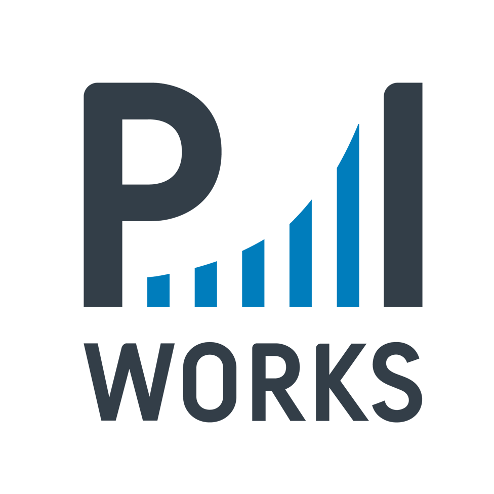

(Click to open)

To all the amazing women who make P.I. Works stronger, more creative, and more beautiful...
Your energy, vision, and dedication inspire us every single day. Here’s to achieving many more milestones together, we are glad to have you!
With Love,
P.I. Works